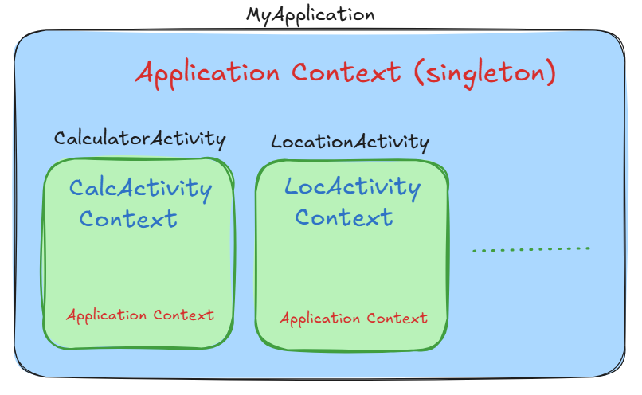
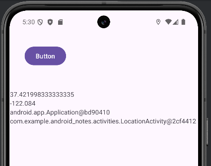
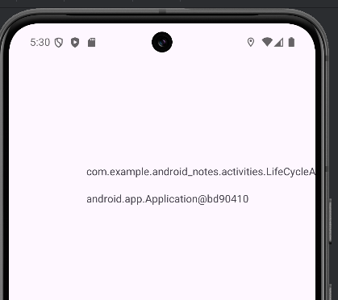

Context. Что это? Зачем это? Как работает?
Во первых, согласно документации, Context - это интерфейс к глобальной информации о вашем приложении.
public abstract class Context
extends Object
Он является абстрактным классом, реализация которого предоставляется системой Android. Предоставляет доступ к базовым функциям приложения:
ресурсам (
getString(),getDrawable())системным сервисам (
getSystemService())файловой системе (
getFilesDir())запуску компонентов (
startActivity(),startService())
Пример:
Мы уже работали с Context'ом в рамках перехода в новое Activity при помощи Intent:
val randomIntent = Intent(this, ViewExamples::class.java)
startActivity(randomIntent)
В нашем случае, мы буде обращаться к контексту при получении объектов-менеджеров для получения данных о местоположении устройства, получении информации о сетях мобильной связи и т.д.
Application, Activity Context
Основные виды Context в Android с которыми мы будем работать:
Вид |
Описание |
Где используется |
|---|---|---|
|
Живёт всё время жизни процесса |
Работа с синглтонами, фоновыми задачами |
|
Контекст, привязанный к Activity |
UI-операции, |
|
Контекст сервиса |
Службы и системные вызовы |
getApplicationContext(получить ссылку на объект приложения)getContext(внутри активности или сервиса получить ссылку на этот объект)this(то же, что и getContext)MainActivity.this(внутри вложенного класса или метода получить ссылку на объект MainActivity)getActivity(внутри фрагмента получить ссылку на объект родительской активности)

Контекст приложения
Это singleton-экземпляр (единственный на всё приложение), и к нему можно получить доступ через функцию getApplicationContext().
Живёт столько, сколько живёт процесс;
Безопасен для синглтонов, долгоживущих объектов;
Нельзя использовать для UI-операций, которые зависят от темы или Window.
Список методов Application Context:
Load Resource Values;
Start a Service;
Bind to a Service;
Send a Broadcast - отправить собщение во ВНЕ (Android, другие приложения и т.д.);
Register BroadcastReceiver - получить собщения из ВНЕ.
Контекст Activity
Привязан к Activity, имеет доступ к теме, Window, LayoutInflater;
Живет в своем жизненном цикле.
Список методов Activity Context:
Load Resource Values;
Layout Inflation;
Start an Activity;
Show a Dialog;
Start a Service;
Bind to a Service;
Send a Broadcast;
Register BroadcastReceiver.
Пример отображения ссылки на ApplicationContext и AcvitivyContext 

Можно заметить, что в обоих Activity ссылка на один и тот же объект android.app.Application@bd90410. НО у самих Activity контексты уже разные, отвечающие за работу каждого Activity.
Системные сервисы
Нужные нам Constants
LOCATION_SERVICE
Use with getSystemService(java.lang.String) to retrieve a LocationManager for controlling location updates.
Например:
locationManager = this.getSystemService(Context.LOCATION_SERVICE) as LocationManager
...
// Проверка разрешений
locationManager.requestLocationUpdates(
LocationManager.GPS_PROVIDER,
1000L,
1f,
this
)
// нужный нам callback
override fun onLocationChanged(location: Location) {
tvLat.setText(location.latitude.toString())
tvLon.setText(location.longitude.toString())
}
TELEPHONY_SERVICE
public static final String TELEPHONY_SERVICE
Use with getSystemService(java.lang.String) to retrieve a TelephonyManager for handling management the telephony features of the device.
val telephonyManager = getSystemService(Context.TELEPHONY_SERVICE) as TelephonyManager
val cellInfoList = telephonyManager.allCellInfo
Log.d(TAG, "${cellInfoList.toString()}")
В результате получаем в logcat строку:
[CellInfoLte:{mRegistered=YES mTimeStamp=225071574392525ns mCellConnectionStatus=1
CellIdentityLte:{
mCi=176224801 mPci=386 mTac=15401 mEarfcn=1626 mBands=[3] mBandwidth=15000 mMcc=250 mMnc=01 mAlphaLong=MTS RUS mAlphaShort=MTS RUS mAdditionalPlmns={} mCsgInfo=null
}
CellSignalStrengthLte: rssi=2147483647 rsrp=-96 rsrq=-15 rssnr=10 cqiTableIndex=2147483647 cqi=2147483647 ta=1 level=2 parametersUseForLevel=0
android.telephony.CellConfigLte :{ isEndcAvailable = false }}]